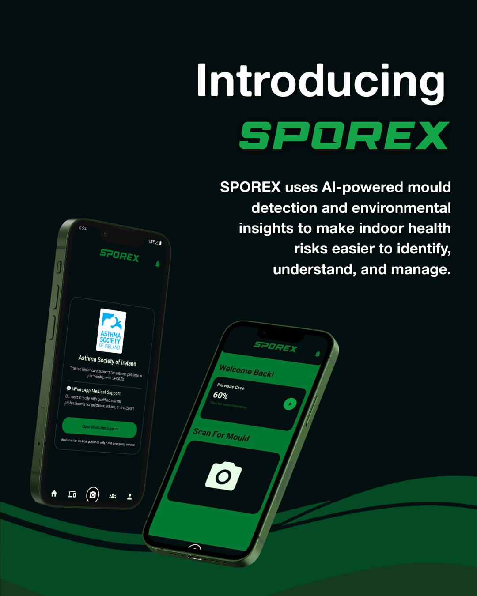
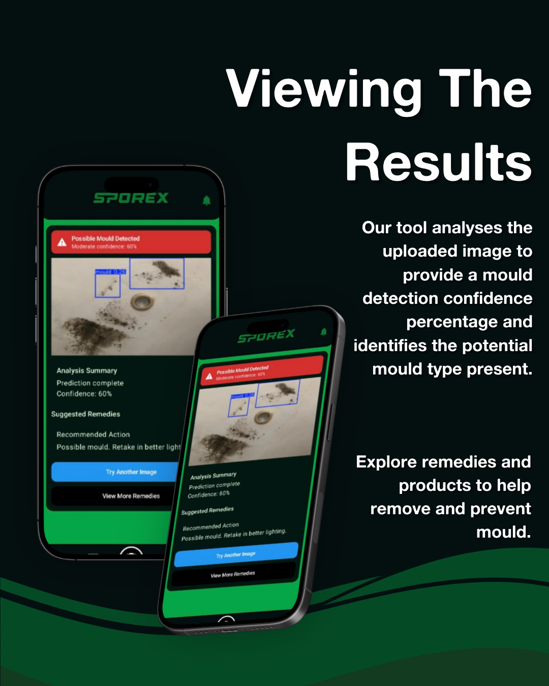
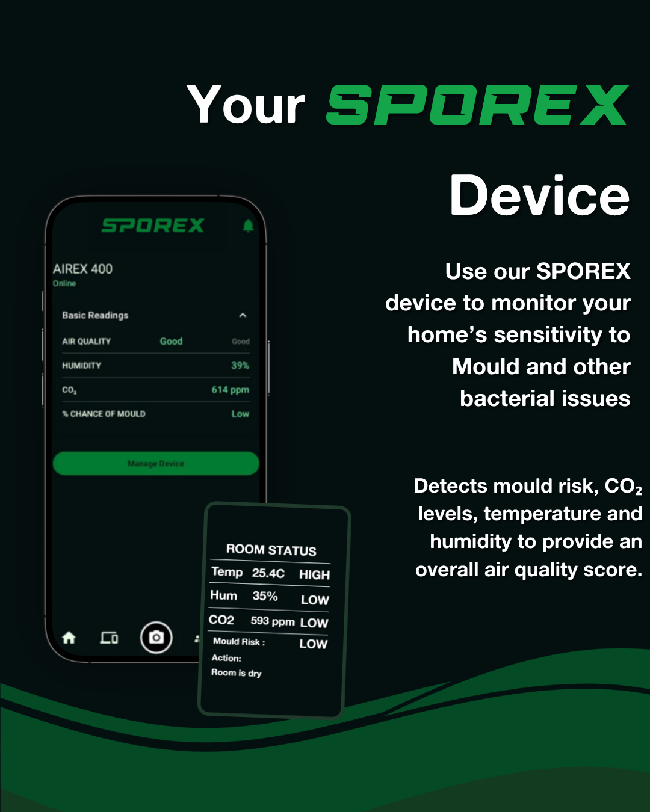

← BACK TO WORK
ROLE
Creative Director, UX/UI Designer & Frontend Developer
TIMELINE
September 2025 - May 2026
CLIENT
The Asthma Society Of Ireland
TECH STACK
Kotlin, Jetpack Compose, Android Studio, MongoDB, Figma
Context
Mould is often easy to spot but understanding its potential health
risks and knowing what to do next is far less straightforward.
Renters and homeowners can struggle to interpret visible mould,
environmental conditions, and conflicting advice, particularly
when existing testing solutions are expensive or difficult to access.
Developed as my final-year Computing in Software Development
project at DKIT, SPOREX explores how
user-centred design can make complex environmental health data
more accessible and actionable. I shaped the product concept,
led its creative direction and designed and developed the mobile
interface, translating AI-driven mould detection and environmental
monitoring into clear visual feedback and practical guidance.



MOBILE DEVELOPMENT
BSc CAPSTONE PROJECT
UI/UX DESIGN
Download APK →
The Problem
The idea for SPOREX sparked when I visited a friend who had a bad case of mould
in their accomodation. I approached the team with my idea and they liked it.
We set out to build a fast, cost-effective identification tool.
To ensure our work targeted genuine health risks, we reached out to establish a
partnership with The Asthma Society of Ireland,
which shaped our understanding of how closely indoor air quality
ties into respiratory health.
Recognizing that identifying mould after it already forms only
solves half the battle, we also expanded our scope to develop an
integrated IoT environmental sensor designed to monitor humidity,
temperature and moisture levels to help high-risk users engage in active prevention.
Ultimately, renters and homeowners are left to navigate widespread indoor dampness
and contradictory DIY advice without the support of explicit national housing legislation
or reliable, accessible testing methods.
Research
To build a truly effective solution, we conducted targeted research across key domains:
mapping common mould species, analyzing existing IoT environmental sensors,
evaluating removal methods and investigating the direct health impacts of spore exposure.
During the research phase, we uncovered shocking information in relation to the problem:
50%
of student rental houses suffer from daily mould growth and indoor temperatures
regularly falling below 18°C, while DIY home test kits provide incomplete snapshots that frequently miss
hidden contamination.
18%
asthma prevalence was recorded among those exposed residents with more than double
the 8% rate found in the wider local community.
0
explicit laws currently exist in Ireland to directly regulate or penalize
residential mould, leaving tenants to navigate severe health hazards through indirect structural repair
guidelines.
Solution
To tackle both immediate diagnosis and long-term prevention, we developed SPOREX as a
dual-part ecosystem: combining an AI-powered mobile application with a dedicated IoT
environmental sensor.
1. Preventive IoT Environmental Sensor: Functioning similarly
to a smart security monitor, the sensor stays in a room to continuously track key
environmental metrics. It calculates real-time risk scores to alert users to conditions
that foster growth before mould becomes visible, providing critical protection for
asthma sufferers and vulnerable groups.
2. Instant AI Mould Identification: For existing visible outbreaks,
users can capture a quick photo to receive an instant species diagnosis and risk breakdown.
Designed particularly with renters and businesses in mind, the free analysis removes
the cost and confusion of At-Home testing.
3. Complete Remediation Guidance & Community: Beyond detection,
SPOREX generates personalized remedies based on the identified mould type, user
profiles to manage multiple rooms, logged case reports, and a community hub for
reliable peer and expert support.
Built natively in Kotlin for Android (with an iOS release planned next),
the system was iteratively validated through user testing with over 50 participants testing
image capture angles, AI analysis accuracy, sensor reliability and feature prioritization.
Reflection
Reflecting on SPOREX, building both a native Kotlin app and an IoT hardware system taught me how to balance
complex data with clear, non-alarmist user experiences. If I were to start over, my primary design focus would
be refining the visual hierarchy between real-time sensor streams and point-in-time AI scans, as well as
launching an iOS companion app side-by-side from day one.
Looking ahead, the goal is to evolve SPOREX from a capstone project
into a market-ready platform. We are working toward a freemium model
that keeps core monitoring free while offering monthly air quality reports
and predictive exposure insights. As part of Release 5, we are
also collaborating with The Asthma Society of Ireland to
integrate a direct "Request a Callback" feature, connecting users with
healthcare support when environmental risk levels spike.